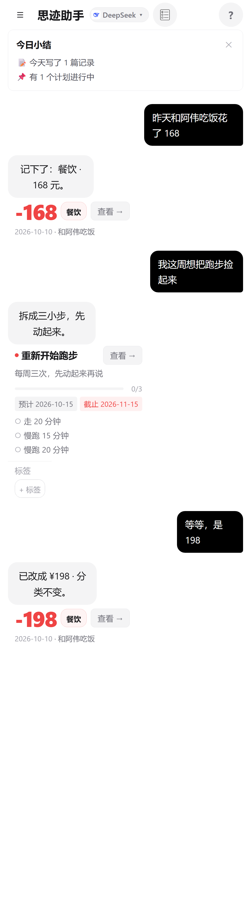
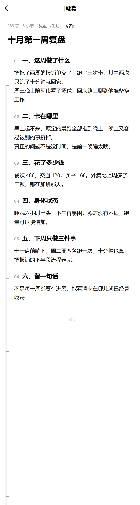
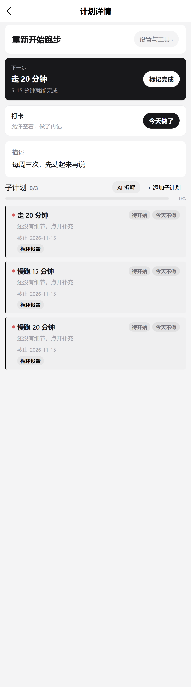

思迹
AI 对话式个人生活助手
把想变成做

对话即记录
说一句话，
就记好了
不用挑模块、不用填字段。AI 判断你要记什么，整理成条目等你确认。
- 记录、账单、计划、人脉、决策、微光 —— 同一个入口
- 说错了直接改：「等等，是 198」
- 落库前可预览，落库后可撤销
记录能被重新读到
写完不是终点，
能读才算
- 长记录自动分章节，左侧一条目录尺
- 拖尺子跳到任意一节，刻度跟手
- 每天「翻一翻」：7 天前 / 30 天前 / 去年今日
- 标签按内容自动打，不用自己分类
筛选用一句话就行：「上周的工作记录」。

计划只给小步
计划必须小到能开始
- 大计划要拆到第一步才能存在
- 断更不惩罚，停几天也不会归零
- 跑不动就先放一放，随时原样恢复
到点会提醒 —— 应用没开着也收得到。

能做什么
一个入口，五件事
记录
心情与想法，说完就存好
账单
花钱随手记，按月自己汇总
计划
从想法拆成能开始的小步
人脉
见过谁、聊过什么，有据可查
决策
纠结的事写下来，过段时间回看
数据保存在你自己的设备上 · 支持自带 API Key
只做两件事：说话、点确认
不打卡、不连击、不评分
静止是合法状态
数据存在本机 · API Key 加密 · 没有自建服务器
思迹
把想变成做
记录 · 账单 · 计划 · 人脉 · 决策